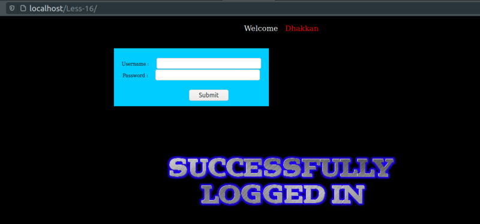

Blind Injections
We'll base our job on Lab 16.
a) Try to login using username=”admin” password=”admin“

Result: We logged in but we don't have any kind of column being used on the page.
b) Trying any other character and you'll se we can't get any kind of information on the screen. Even if we use ', " \, #.
Result: This is a blind injection.
NOTE:
Blind-based Boolean injections which are like 1 or 1=1, 1 AND 1=1, which means for the first query we have the Boolean value 1 and for the second we also have the Boolean value 1, which equals to TRUE, since an AND function is involved.
c) Try with ") OR 1=1 #.
Result: We logged in but we don't have any kind of column being used on the page. Anything we put between ") and # will be evaluated.
Now we can use either BOOLEAN INJECTION or TIME BASED injection.